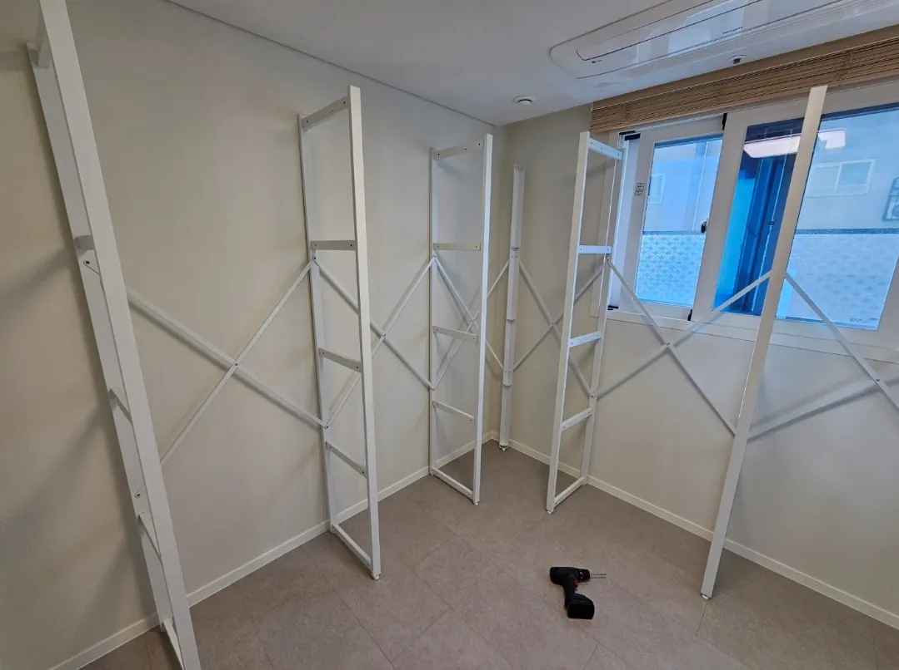

Process
시스템행거
이전설치 과정
처음 맡기시는 분들을 위해 작업 흐름을 단계별로 정리했습니다.
시스템행거 이전설치는 문자 상담으로 시작해 현장 해체, 운반, 새 공간 설치, 점검 순서로 진행됩니다. 단계마다 무엇을 하는지 알면 준비할 것과 기다려야 할 시간을 미리 가늠할 수 있습니다.
가장 중요한 단계는 해체 전입니다. 원래 배치를 기록하고 부품을 칸별로 나눠 두어야 새 공간에서 빠르고 정확하게 다시 세울 수 있습니다.

Situations
단계별로 하는 일
상담
사진과 치수를 받아 작업 범위를 정합니다.
해체
부속부터 분리하고 칸별로 부품을 묶습니다.
설치
프레임을 먼저 세우고 수평을 잡은 뒤 선반을 올립니다.
점검
옷을 걸어도 흔들리지 않는지 확인합니다.
Checklist
단계별로 준비할 것
| 단계 | 코니처가 하는 일 | 고객님이 준비할 것 |
|---|---|---|
| 상담 | 작업 범위·비용 안내 | 행거·새 공간 사진, 치수 |
| 일정 | 방문 날짜 확정 | 이사·입주 일정 공유 |
| 해체 전 | 배치 기록 | 옷과 물건 비우기 |
| 설치 | 새 배치로 설치 | 설치할 벽 앞 공간 비우기 |
| 마무리 | 수평·흔들림 점검 | 완료 후 사용해 보기 |
Process
전체 진행 순서
문자 상담
사진과 치수를 문자로 받습니다.
배치 정하기
새 공간에 맞는 구성을 정합니다.
해체·포장
부속을 먼저 분리하고 칸별로 포장합니다.
운반
부품을 새 공간으로 옮깁니다.
재설치·점검
새 배치로 설치하고 흔들림을 확인합니다.
FAQ
자주 묻는 질문
작업 시간은 얼마나 걸리나요?
칸 수와 부속, 배치 변경 여부에 따라 달라 사진을 보고 안내드립니다.
작업하는 동안 집에 있어야 하나요?
시작할 때 배치를 함께 확인하고, 끝날 때 점검 결과를 같이 보시면 좋습니다.
해체와 설치를 나눠 맡길 수 있나요?
네, 해체만 또는 설치만 맡기실 수 있습니다.
작업 후 정리도 하나요?
작업한 자리를 정리하고 마무리합니다.
설치 후 흔들리면요?
사진이나 영상을 문자로 보내주시면 확인해 드립니다.